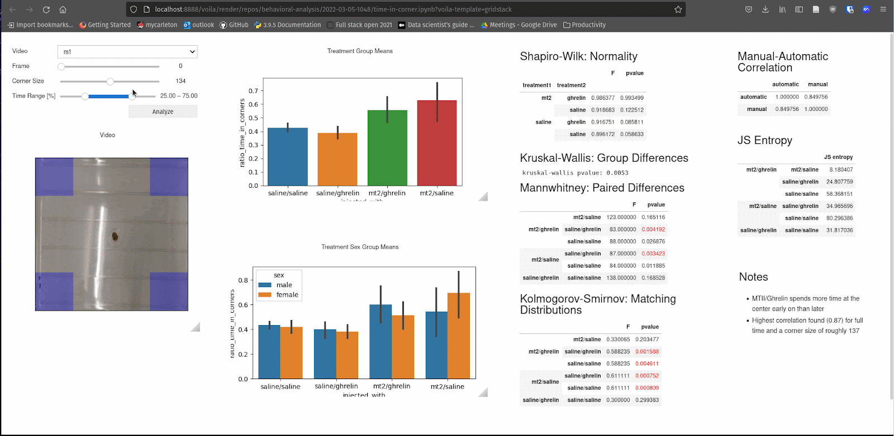
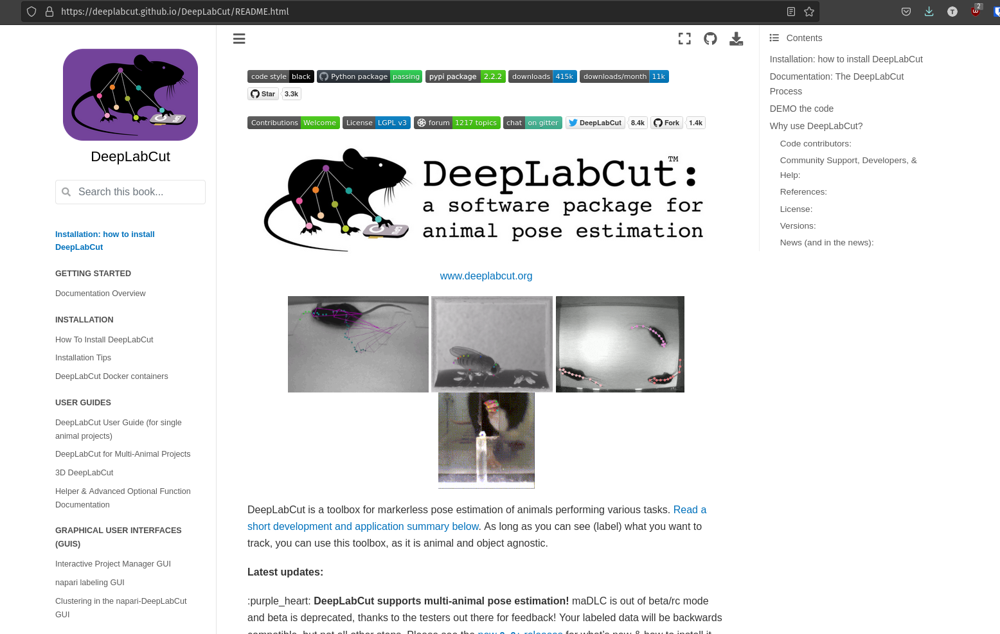

Advanced Jupyter Topics
Contents
Advanced Jupyter Topics#
Open in Colab button#

Widgets and Dashboards#
from ipywidgets import Button, IntText, Label, VBox, HBox
button = Button()
button.description = "Click me!"
output = IntText()
output.value = 0
def update_counter(evt):
output.value += 1
button.on_click(update_counter)
HBox([Label("Number of clicks"), output, button])
Voila example#

Jupyter Books#
Jupyter books are a popular way to create documentation for projects with working code examples
An example of this is the current deeplabcut docs: https://deeplabcut.github.io/DeepLabCut/README.html

This project also uses jupyter books!
You can see it published here
For instructions on how to use it with github (/gitpages), look here: https://jupyterbook.org/en/stable/publish/gh-pages.html